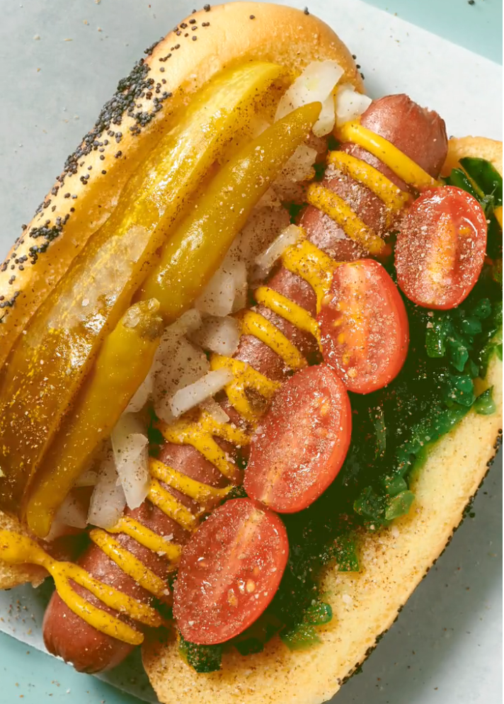

Chicago-Style Hot Dog

Description
A brilliant variation of a classic, the Chicago-Style Hot Dog combines delicious fresh ingredients to create an immensely appetizing dish.
Below are the ingredients.
Ingredients
- All-beef hot dogs
- Steamed poppy seed buns
- Yellow mustard
- Raw, chopped white onion
- Dill pickle spears
- Sweet pickle relish
- Sports peppers
- Pickled tomatoes
- Celery salt
Steps
- Bring 1 or 2 inches of water to boil(making sure your large pot fits in a steamer basket). Steam dogs in basket with buns evenly placed on top of dogs - 10 min
- Dice onions and halve pickle spears
- Split buns, put in dogs
- Top with mustard
- Top with diced onion on one side, relish on the other
- Top with sport peppers
- Tuck tomatoes between relish and hot dog
- Generously season with celery salt
Home